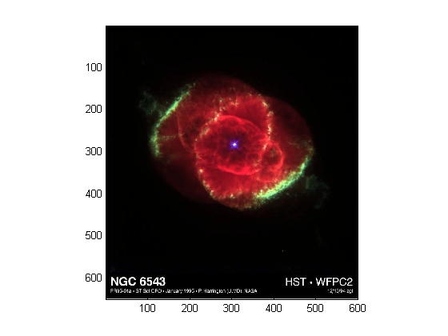
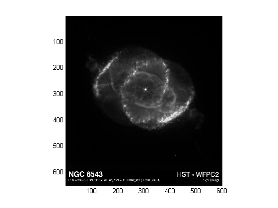

8-Bit and 16-Bit Images
Indexed Images
Double-precision (64-bit) floating-point numbers are the default MATLAB® representation
for numeric data. However, to reduce memory requirements for working
with images, you can store images as 8-bit or 16-bit unsigned integers
using the numeric classes uint8 or uint16,
respectively. An image whose data matrix has class uint8 is
called an 8-bit image; an image whose data matrix has class uint16 is
called a 16-bit image.
The image function can display 8- or 16-bit
images directly without converting them to double precision. However, image interprets
matrix values slightly differently when the image matrix is uint8 or uint16.
The specific interpretation depends on the image type.
If the class of X is uint8 or uint16,
its values are offset by 1 before being used as colormap indices.
The value 0 points to the first row of the colormap, the value 1 points
to the second row, and so on. The image command
automatically supplies the proper offset, so the display method is
the same whether X is double, uint8,
or uint16:
image(X); colormap(map);
The colormap index offset for uint8 and uint16 data
is intended to support standard graphics file formats, which typically
store image data in indexed form with a 256-entry colormap. The offset
allows you to manipulate and display images of this form using the
more memory-efficient uint8 and uint16 arrays.
Because of the offset, you must add 1 to convert a uint8 or
uint16 indexed image to double.
For example:
X64 = double(X8) + 1; or X64 = double(X16) + 1;
Conversely, subtract 1 to convert a double indexed
image to uint8 or uint16:
X8 = uint8(X64 - 1); or X16 = uint16(X64 - 1);
Intensity Images
The range of double image
arrays is usually [0, 1], but the range of 8-bit intensity images
is usually [0, 255] and the range of 16-bit intensity images is usually
[0, 65535]. Use the following command to display an 8-bit intensity
image with a grayscale colormap:
imagesc(I,[0 255]); colormap(gray);
To convert an intensity image from double to uint16,
first multiply by 65535:
I16 = uint16(round(I64*65535));
Conversely, divide by 65535 after converting a uint16 intensity
image to double:
I64 = double(I16)/65535;
RGB Images
The color components of an 8-bit RGB image are integers in the
range [0, 255] rather than floating-point values
in the range [0, 1]. A pixel whose color components are (255,255,255)
is displayed as white. The image command displays
an RGB image correctly whether its class is double, uint8,
or uint16:
image(RGB);
To convert an RGB image from double to uint8,
first multiply by 255:
RGB8 = uint8(round(RGB64*255));
Conversely, divide by 255 after converting a uint8 RGB
image to double:
RGB64 = double(RGB8)/255
To convert an RGB image from double to uint16,
first multiply by 65535:
RGB16 = uint16(round(RGB64*65535));
Conversely, divide by 65535 after converting a uint16 RGB
image to double:
RGB64 = double(RGB16)/65535;
Mathematical Operations Support for uint8 and uint16
To use the following MATLAB functions with uint8 and uint16 data,
first convert the data to type double:
For example, if X is a uint8 image,
cast the data to type double:
fft(double(X))
In these cases, the output is always double.
The sum function returns
results in the same type as its input, but provides an option to use
double precision for calculations.
MATLAB Integer Mathematics
See Arithmetic Operations on Integer Classes for more information on how mathematical functions work with data types that are not doubles.
Most Image Processing Toolbox™ functions accept uint8 and uint16 input.
If you plan to do sophisticated image processing on uint8
or uint16 data, consider including that toolbox
in your MATLAB computing environment.
Other 8-Bit and 16-Bit Array Support
You can perform several other operations on uint8 and uint16 arrays,
including:
Reshaping, reordering, and concatenating arrays using the functions
reshape,cat,permute, and the[]and'operatorsSaving and loading
uint8anduint16arrays in MAT-files usingsaveandload. (Remember that if you are loading or saving a graphics file format image, you must use the commandsimreadandimwriteinstead.)Locating the indices of nonzero elements in
uint8anduint16arrays usingfind. However, the returned array is always of classdouble.Relational operators
Converting an 8-Bit RGB Image to Grayscale
You can perform arithmetic operations on integer data, which enables you to convert image types without first converting the numeric class of the image data.
This example reads an 8-bit RGB image into a MATLAB variable and converts it to a grayscale image:
rgb_img = imread('ngc6543a.jpg'); % Load the image
image(rgb_img) % Display the RGB image
axis image;
Note
This image was created with the support of the Space Telescope Science Institute, operated by the Association of Universities for Research in Astronomy, Inc., from NASA contract NAs5-26555, and is reproduced with permission from AURA/STScI. Digital renditions of images produced by AURA/STScI are obtainable royalty-free. Credits: J.P. Harrington and K.J. Orkowski (University of Maryland), and NASA.
Calculate the monochrome luminance by combining the RGB values according to the NTSC standard, which applies coefficients related to the eye's sensitivity to RGB colors:
I = .2989*rgb_img(:,:,1)... +.5870*rgb_img(:,:,2)... +.1140*rgb_img(:,:,3);
I is an intensity image with integer values
ranging from a minimum of zero:
min(I(:)) ans = 0
to a maximum of 255:
max(I(:)) ans = 255
To display the image, use a grayscale colormap with 256 values.
This avoids the need to scale the data-to-color mapping, which is
required if you use a colormap of a different size. Use the imagesc function in cases where the colormap
does not contain one entry for each data value.
Now display the image in a new figure using the gray colormap:
figure; colormap(gray(256)); image(I); axis image;

Related Information
Other colormaps with a range of colors that vary continuously
from dark to light can produce usable images. For example, try colormap(summer(256)) for
a classic oscilloscope look. See colormap for
more choices.
The brighten function
enables you to increase or decrease the color intensities in a colormap
to compensate for computer display differences or to enhance the visibility
of faint or bright regions of the image (at the expense of the opposite
end of the range).
Summary of Image Types and Numeric Classes
This table summarizes how data matrix elements are interpreted as pixel colors, depending on the image type and data class.
Image Type | double Data | uint8 or uint16 Data |
|---|---|---|
Indexed | Image is an m-by-n array of integers in the range [1, p]. Colormap is a p-by-3 array of floating-point values in the range [0, 1]. | Image is an m-by-n array of integers in the range [0, p –1]. Colormap is a p-by-3 array of floating-point values in the range [0, 1]. |
Intensity | Image is an m-by-n array of floating-point values that are linearly scaled to produce colormap indices. The typical range of values is [0, 1]. Colormap is a p-by-3 array of floating-point values in the range [0, 1] and is typically grayscale. | Image is an m-by-n array of integers that are linearly scaled to produce colormap indices. The typical range of values is [0, 255] or [0, 65535]. Colormap is a p-by-3 array of floating-point values in the range [0, 1] and is typically grayscale. |
RGB (Truecolor) | Image is an m-by-n-by-3 array of floating-point values in the range [0, 1]. | Image is an m-by-n-by-3 array of integers in the range [0, 255] or [0, 65535]. |